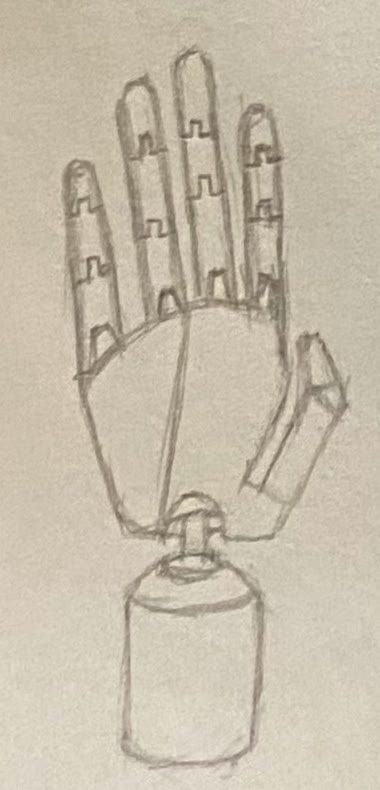
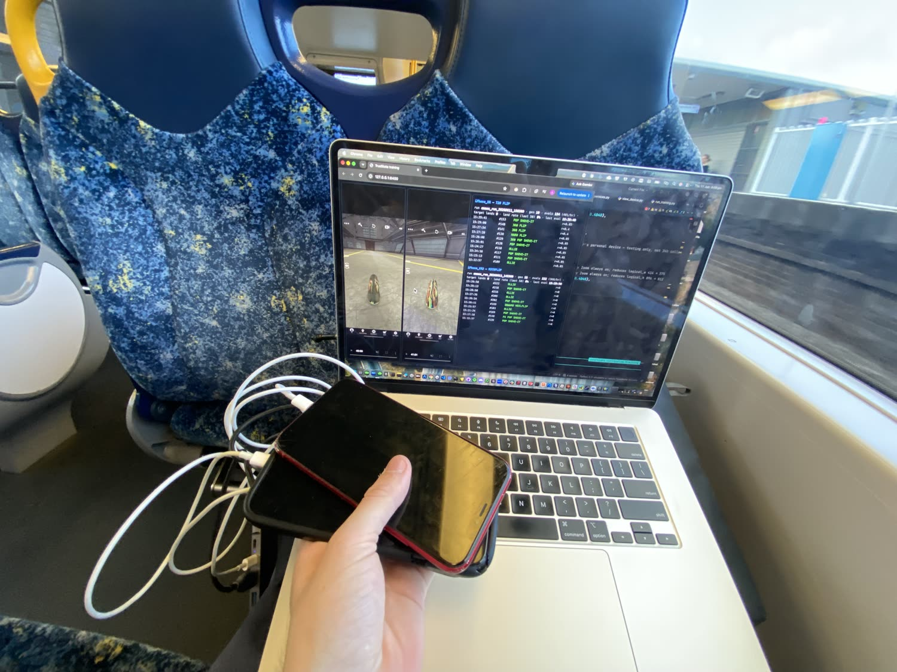
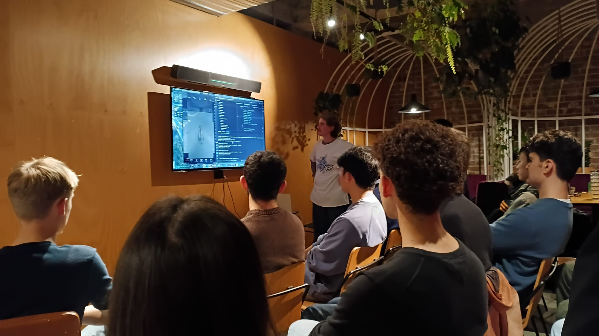
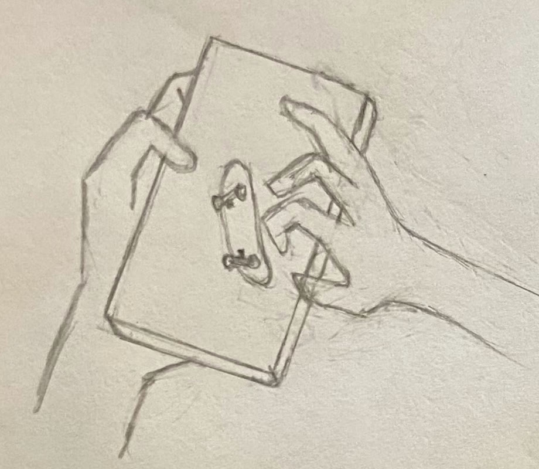
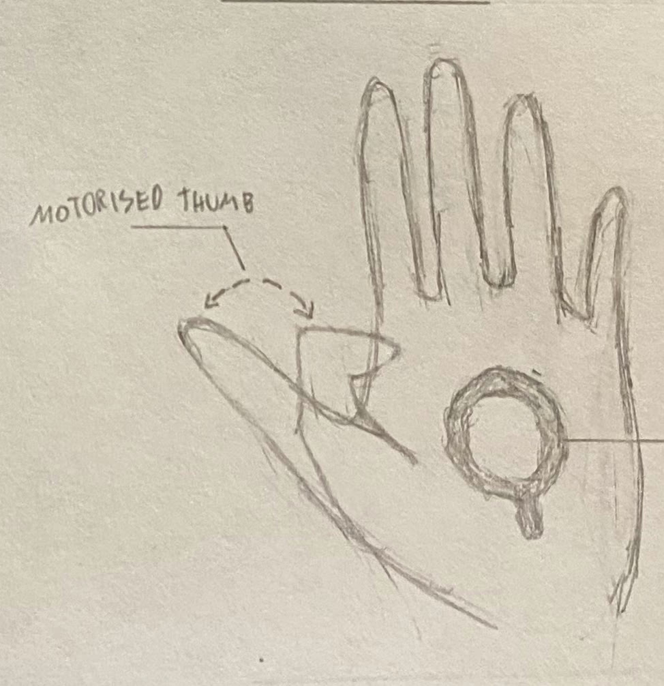

Coordinate normalization
One policy runs across three screen sizes via a canonical reference frame.
I’m building a robotic hand that plays True Skate on an iPhone. Some people strum a guitar or play the piano; True Skate is my instrument — and I’m building the mechanical version. The vision: a phone on a podium, and a hand performing tricks on it.
LATEST · reliable back-to-back 360 flips
Most game-playing AI plugs straight into the game's code. TrueSkate-AI doesn't get that luxury — it plays True Skate on a real iPhone, sends the same swipes your thumb would, and reads the screen to find out whether a trick landed. A shaped reward turns those readings into a learning signal, and an evolution strategy slowly discovers the gesture that nails each trick. The goal isn't a high score — it's an agent that runs whole park lines in my own skating style.
My conjecture: I can't assimilate the entire internet's knowledge in a lifetime, and I can't train Claude Opus on consumer hardware — but I've proven I can master True Skate well within one. So it may be possible to train an AI to play True Skate on consumer-grade hardware.
And the goal isn't only software. The agent's actuator is a tendon-driven robotic hand being built to physically tap and swipe the glass — moving the way a human hand does, not a script poking at an API.


Almost every robotic hand is built to grip. TrueSkate-AI's needs the opposite — speed and human-like motion under no load — so it borrows from several open-source designs and recombines them.
I'm adapting, not copying. I'm experimenting with existing open-source hands — ORCA, HRI, and Ruka-v2 — and folding the best-suited features of each into my own. None of them is "the base"; each just contributes what fits a speed-over-strength, zero-load brief.
Each finger gets a tendon-driven curl plus base splay — roughly two to three degrees of freedom — so it can flick and spread, with capacitive fingertips gated electronically so every tap registers. The first build is a two-finger scaffold (index + middle) to prove the module and the control loop before scaling to all five.


an unedited agent rollout — decision log + the live game, side by side.
// WHAT YOU’RE SEEING
So far I've taught the agent flatground tricks with CMA-ES — the reward is the trick's name shown on-screen when it lands, read by OCR and matched against a known tricks table, running on my phone plus two broken iPhones over WebDriverAgent. Here's the full loop.
The hands. A learned touch policy produces the gestures. Today they're injected in software — Appium + WebDriverAgent driving real iPhones — with touch points, timing and curvature normalized across three screen sizes so one policy runs on any device in the fleet. The endgame swaps that software touch for a physical, tendon-driven robotic hand (in build) executing the very same gestures on the glass.
The eyes. The screen is streamed over MJPEG and Apple Vision OCR reads the on-screen trick name in real time. (Apple Vision replaced Tesseract, which hallucinated on short, colored game text.)
The reward. A target-relative signal: the exact target trick scores full reward, a trick in the right mechanical family scores partial, any landed trick scores a little, nothing scores zero. Shaping — not a binary land/fail — is what gives the optimizer enough gradient to climb.
The optimizer. CMA-ES proposes new gesture parameters each generation, keeps what lands, and tightens around the winning region. (An earlier PPO + HER attempt collapsed; the evolution strategy proved far more robust for this real-time, noisy-reward setting.)
Scale. Three phones run evaluations in parallel, in real time, on a headless training server monitored remotely.
One policy runs across three screen sizes via a canonical reference frame.
Training runs on a headless server, monitored remotely over SSH.
Apple Vision is reliable on short colored game text where OCR alternatives weren't.
Two tracks — the agent and the hand — converging on a piece that plays, and is built to be seen.
Track A · the agent — software
Reliable, repeatable landings for individual tricks across the 36-trick flatground set.
A single skill-conditioned network that performs any trick on command, distilled from the evolution-strategy rollouts.
An agent that strings tricks into full park lines that look like how I actually skate.
Track B · the hand — hardware
Curl + splay on index and middle — proving the mechanism and the control loop before scaling up.
Scaling the curl-and-splay module to a complete tendon-driven hand.
A left hand holding the iPhone and a right hand finger-skating True Skate on a real screen — finished cleanly enough to mount on a podium and leave on long-term display.